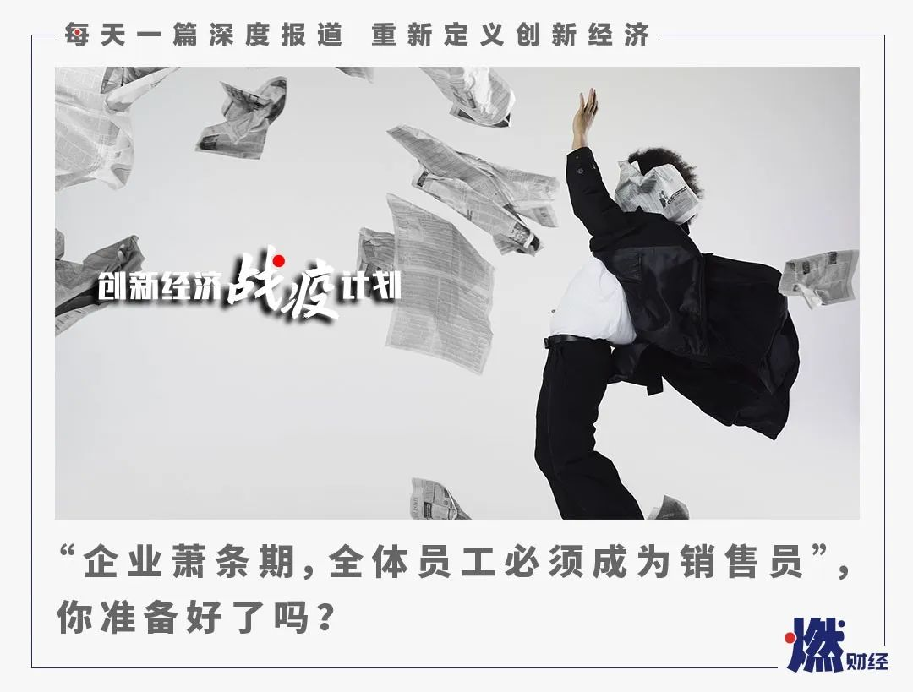

欠薪、裁员、全员销售，优胜教育激进自救
原文链接 备份链接 燃财经（ID:rancaijing）原创 作者 | 韩冰 编辑 | 阿伦 疫情“黑天鹅”一出，企业现金流骤降，不少线下业态面临生存考验，教育机构首当其冲。 近日，教育培训机构“优胜教育”被曝拖欠薪资，部分员工遭遇裁员。 …

《创新经济战疫计划》，是燃财经在新型肺炎疫情期间推出的特别栏目，关注创新经济企业遇到的新难题、商讨应该采取的新对策，希望能够帮助中小企业一起战胜挑战、把握机会。
作者 | 金玙璠
编辑 | 魏佳
疫情危机之下，企业主扛起了继减员、降薪之后的第三道护身符——全员营销。
继去年房企争相“全员卖房”之后，今年2月27日，有苏宁员工在社交媒体发布了一份苏宁“控股集团总裁办公室”的公告，公告称苏宁要求全产业每一位员工参与自有APP的线上推广和销售，要求3天内（2月27日-29日）人均完成保底2单，总金额达到1000元以上的销售，未完成的差额将作为处罚，从薪资中扣除。
从这份公告看，考核涉及的只有全产业的管理干部，但多名内部人士对燃财经称，非业务和销售岗的所有员工也有此要求。

苏宁员工爆料的公告截图
来源 / 网络
事实上，疫情之下，除了苏宁之外，大型房企、教育机构、361度及安踏等运动品牌也实行了“全员营销”策略，而据北森人才管理研究院透露，近期还有众多公司咨询全员营销事宜，预计2020年会有更多企业加入。
多名员工表示，现在是特殊时期，公司要提高营业额能够理解，但不同岗位对人的专业甚至性格都有一定的要求，公司不能以完不成销售任务为由扣除工资，也是因此，苏宁这次“负激励”的政策引发了普遍关注。但在老板层面，燃财经采访的多位企业主均表示支持全员营销，只是有一定的适用范围，需要企业主在具体实施层面保持克制。
不过，对于职场人来说，最担心的是，拿着不变的薪水，却还要干销售岗的工作，甚至承担着KPI，会不会成为2020年的常态。事实上，无论企业是否实行全员营销，2020年的职场都不会太容易，疫情冲击之下，企业都在求变，尝试的可能是全员营销，也可能是其他的组织变革形式，你准备好了吗？
***“找不到人买就只能自己下单”***
李牧在苏宁武汉大区任职非销售岗位，疫情期间一直在家远程办公。据他回忆，他所在的大区于2月13日第一次发布带单考核方案，要求所有岗位员工每人每天完成2单、单笔订单金额50元以上的推客任务，因为他本人和亲戚朋友身在武汉，电商平台的订单基本是不发货状态，想要完成推客任务很难，他最终靠着让亲朋好友充话费才完成任务。
让他不能接受的是，2月27日集团又叠加下发了“3天完成1000元”的销售任务，明确规定“充话费”不算在内。“完不成的部分美其名曰‘负激励’，其实就是从工资里扣钱，我刚毕业一年，工资也没有几个一千，这两天只能找外地的朋友帮忙。”李牧告诉燃财经。

来源 / 受访者提供

来源 / 受访者提供
“疫情期间企业很难，但员工也不容易，现在这种形势下，武汉大区所有员工心理压力本来就很大，企业还推行这样的政策，真的寒心了。”李牧说，希望公司能听到同事们的心声。
多位苏宁员工也向燃财经表示，他们的岗位原本是物管、财务、人事、客服，但是从2月份开始，每天都背负着推客考核任务，同事们每天都会在朋友圈发布一定数量的购买链接，如今又新增了“3天1000元”的销售任务，作为非销售人员没有目标客户群体，多数人选择找亲戚朋友帮忙，实在没有人买了，就只能自己下单。
苏宁南京大区的苏肖晨心态更加悲观，“3天卖货1000元以上，这摆明了是大多数普通员工不可能完成的任务，公司就有理由少发工资，你如果完成任务了，公司销售额增加1000元。”
2019年8月22日全国工商联发布的《2019年中国民营企业500强报告》中显示，苏宁的员工总数是25.68万人。按此人数计算，如果每位员工完成1000元的卖货任务，公司销售额将增加2.5亿。
苏宁这一次的行为已引发舆论关注，苏宁官方回应称，宅经济大背景下，此举可更好地了解用户需求优化体验，未来将持续发力全民营销，并披露了相关数据——2月27日0点至24点，苏宁“24期免息”活动中的订单量同比增长7倍，其中社群营销销售额贡献率超过30%。
苏宁全员营销的效果毋庸置疑，但是从源头看，对非销售岗位制定销售任务，且有惩罚制度，是否符合劳动法规定呢？燃财经就此咨询了多位律师。
北京盈科（上海）律师事务所全球合伙人郭韧律师认为劳动法规定企业有权调岗，但不可强迫非销售岗位员工完成销售任务，而作为非销售岗位员工可以拒绝完成销售任务，公司不能以未完成销售任务为由解聘非销售岗位员工，如果以此为由被罚款可以维权。但她也坦言，员工维权难度较大，此类案件多以协调解决。
该所另一名合伙人胡郁舒律师同样表示，如果非销售岗位员工（劳动合同内写明其主要劳动内容，且劳动内容不包括销售）提供了劳动合同内约定的劳动内容，那么单位就不能以未完成销售任务为由扣除工资，这属于违法行为。
***疫情下，逃不掉的游戏规则***
事实上，“全员营销”的公司远不止苏宁一家，这种方式早已是房地产行业内的通行做法，而且房企动员营销的范围更广，不但调动员工，业主、合作伙伴都可以加入“销售”行列，通过促进成交，获得一定比例的佣金。
房企的玩法不外乎让全部员工在社交平台转发楼盘促销信息，通过人海战略带动公司营销，以恒大为例，全员营销的激励多于处罚：每个月各部门排名，前三名的部门会有工资20%左右的额外奖金，前10名也有；排名最后的三个部门，部分负责人会被扣罚5%的工资，并做检讨。
某房企策划何靖告诉燃财经，对房企来说，全员营销一般适用于淡季营销，比如年底的最后一个季度，可以摊薄企业成本，提高项目曝光度。对于员工来说，没有KPI，卖出去一套还能拿提点，因此在房地产行业早已成为常态，但是今年受疫情影响，年初就开始了，都是为了现金流。
何靖所在的公司一直有一个“老带新”的推荐系统，想赚佣金的同事就参与。不过何靖表示，自己和同事平时工作量已经很饱和，且个人朋友圈子也不属于客户群，所以平时积极性不高。现在疫情来了，集团层面推出了“员工千元预定房源”的活动，员工每人交1000元预定一套房源，这套房源由个人出去销售，成交后，公司除了返还1000元预定金之外，还会支付和销售岗位同等比例的佣金，并额外补偿1000元；未成交，也会返还预定金。

图 / 视觉中国
不过，公司未就此事和员工签订合同，何靖担心返还预定金的时间无法保证。她回忆，此前分公司也要求员工预定房源，她交的5000元定金在半年后才返还。
“同事总体上不是非常反感，疫情短时间不会结束，也不会因为1000块做什么冲动的举动，大家都知道身处这个行业、这个组织，都得遵守游戏规则。”何靖说，其实全员营销在房地产行业就是圈层营销，也就是老带新，但是同事多数不属于业主的圈层，手里也没有销售资源，只能用私人时间尽力去开拓。
何靖判断，未来大型房企会把“全员营销”政策制定得更加激进，而且会作为更加常态化的玩法。不过在她看来，让员工自己掏钱预定房源的做法，对企业来说百利而无一害，但是对于行业发展不是件好事——“拿某知名房企来说，看市场数据卖出了很多套房，但实际上有很多压在内部员工、老业主手里。”
北森人才管理研究院院长周丹称，全员营销的理念在快消、餐饮、保险、信用卡、房企这些行业是非常常见的，主要适用于销售产品形态相对普适的公司。
“如今，受疫情影响，很多组织前端的收入开始下降，整个组织经营面临着巨大的困难，压强也会传导到中后端，这种情况下，全员营销是以整个组织能力去对抗业绩下滑的方式。”周丹对燃财经分析，“好处非常明显，首先，当大部队全员压向一线，利于各个部门加强协作配合，其次，如果企业文化价值观的底子不错，当发生危机时采用全员营销，可以动员全员的士气。”
运动品牌就是典型的例子，据燃财经了解，目前多个运功品牌已经启动了全员营销，他们的员工近日都在朋友圈等社交平台发布产品及优惠信息。
运动品牌361度发布公告表示，疫情将对2020年上半年的财务表现造成一定影响，为弥补疫情给终端销售造成的影响，集团将部分销售转移至电商平台上，发起全员营销的号召，并新开发了“微信小程序”以增强在线营销。
同样，安踏集团董事局主席兼CEO丁世忠在内部信中透露，“面对疫情影响，安踏与其他品牌一样，将经营的主战场转向线上，安踏也通过全员参与零售”。安踏方面也透露，从2月1日起，已有超过3万名员工及经销商伙伴参与到“全员零售”项目。
除此之外，疫情之下，线下教育企业受到的冲击也非常严重。某老牌教育培训机构的员工近日向燃财经反映，校区要求老师转型销售，全员卖课，提成日结。
*****全员营销怎么玩？*****
*****老板保持克制，员工心态开放*****
对于全员营销这件事，老板们怎么想？
全员营销最著名的操盘手恐怕是稻盛和夫了，他曾说过“企业萧条期，全体员工必须成为销售员”，他坚定地认为，面对不景气，首先该强调的就是全员营销，这也成为众多企业主的“圣经”。
“可能有一些人认为全员营销不是好办法，追求的是短期效应，但我反而觉得是一个好事情，让后台一方面更理解前台的辛苦，另一方面对客户有更深的感知。”智联招聘CEO郭盛对燃财经分析，适用与否其实不取决于行业，而与组织形态有关，当一个组织的形态是以客户为中心，价值观是为客户创造价值，那么就可以适用全员营销。
他也提醒企业主，虽然适用范围很广，但不分析情况就这么做，可能是病急乱投医。
十号街商城创始人陈克勇认为，不能有些企业这么做了或者取得成功了，就以偏概全认为是真理，全员营销只适用于销售贸易型公司，也就是全前台化、中台和后台比例不高的公司。他建议企业主要考虑到不同岗位员工的销售时间是否充裕，是否有销售平台和目标客户资源。
“如果我们公司使用全员销售，会设置奖励，但不会设置KPI和惩罚，目的也是让员工身边的人使用公司的产品和服务，听到更真实的反馈。”陈克勇对燃财经表示，全员营销不应该是KPI，否则首先受影响的将是本职岗位，工作效率大打折扣，对企业来说，得不偿失，而且利用员工个人的私域流量来打通销售，效能较低，规模有限，不能持续，非企业首选。从长远来看，专业分工才能获得好效率。
图 / 视觉中国
全员营销之所以引发争议，甚至给企业主带来困扰和挑战，并不是因为这个方向有问题，而是因为部分企业主的认知误区，在执行过程中走样了。“很多中国企业有个误区，认为销售是人人都可以干的，但事实上，这个岗位的专业性绝不亚于任何一个其他的专业工种。”周丹表示。
她解释，全员营销分为“营”和“销”，一般企业对非销售岗位人员的预期就是“营”，也就是让更多人知道，这相对更容易实现；如果企业想达到的效果是“销”，把产品销售出去，那就意味着要让员工背KPI，这就要考虑整个组织文化、员工的向心力如何，如果强行上全员营销，让非销售岗位的人临时进入销售场景可能还会产生一些负面后果，比如中后台的人员大量流失，或者员工在过程中有很多软抵抗，不但企业很难有收益，而且会对组织产生更大的破坏力。
通常来说，全员营销更适用于短期使用，比如基于某个单品、某个关键战役，产品最好也是普适性的；对于体量规模偏大的公司而言，把员工当作一种人才资源和渠道去释放出去，效果也更好。
她建议，在全员营销过程中，如果要对员工下指标，更适合下行为指标，而不是结果指标，比如发朋友圈、集多少赞，拜访多少客户等，而不是拿到多少销量。如果一定要下结果指标，最好不要下到个人，而是下到更大的单元，比如下到团队，或者让中后台员工和销售结对子，联合去打单。尤其不建议企业主采用极端的方式，比如对单独的个人进行惩罚，这不但涉及到公平性的问题，也会极大挫伤非销售岗位人员的积极性，一旦形成抵触情绪，对整个组织也是弊大于利。
周丹坦言，目前正在向她咨询准备采用全员营销的企业确实不少，2020年会有更多企业加入，原来只有大企业做，可能今年一些小企业也会尝试。
她建议职场人做好心理准备，企业尝试的可能是全员营销，也可能是其他的组织变革形式，职场人应该抱有更开放的心态，当然也不要因此割裂对岗位的认知。“我们调研发现，组织对员工的要求，要么专，要么全，这个趋势是职场人一定要面对的，要么提高某个专项上的专业度，成为高精尖人才，要么在基础职位上提高综合能力。”周丹说。
*题图来源于视觉中国。应受访者要求，文中李牧、苏肖晨、何靖为化名。“创新经济战疫计划”相关的深度报道和沙龙实录可点击公众号菜单“战疫计划”阅读。


你“转行”做销售了吗？
欢迎在评论区留下你的评论，网易云音乐黑胶会员季卡一张****。原创文章转载请点击公众号菜单“转载合作”。
一手资讯/硬核报告/每日红包/线下活动！就差你了！快加微信rancaijing02回复“读者”一键上车！


原文链接 备份链接 燃财经（ID:rancaijing）原创 作者 | 韩冰 编辑 | 阿伦 疫情“黑天鹅”一出，企业现金流骤降，不少线下业态面临生存考验，教育机构首当其冲。 近日，教育培训机构“优胜教育”被曝拖欠薪资，部分员工遭遇裁员。 …
原文链接 备份链接 ***机器再度轰鸣*** 距离温州南站五六公里的瓯海区富泉路上，遍布着各式鞋厂、超市和快餐店。原本熙熙攘攘的街道，如今在疫情的阴影下显得有点冷清。 临近饭点，马路南端一家电子厂的员工走进附近一家快餐店——这个快餐店的 …
原文链接 备份链接 目前为止，伽蓝已累计捐款捐物超过1000万元，全国近2万名医护人员用上了伽蓝的产品，我们感到非常自豪，能够为一线医护人员尽一些绵薄之力。 口述 | 陈涓玲 整理 | 沈 林 最近的一个多月以来，每天从早到晚都在忙忙碌 …
原文链接 备份链接 《创新经济战疫计划》，是燃财经在新型肺炎疫情期间推出的特别栏目，关注创新经济企业遇到的新难题、商讨应该采取的新对策，希望能够帮助中小企业一起战胜挑战、把握机会。 作者 | 苏琦 编辑 | 魏佳 “金三银四”的春招季，如 …
原文链接 备份链接 燃财经（ID:rancaijing）原创 作者 | 孟亚娜 编辑 | 凌远川 坐电梯像“吃火锅”，吃饭像“参加高考”，红外线测体温，脚踏式按键开门神器……近日，互联网公司的花式复工火了，网友大呼，太硬核了。 图片来源 …